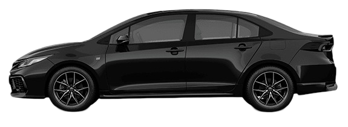
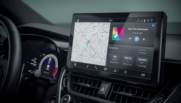
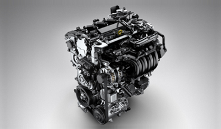
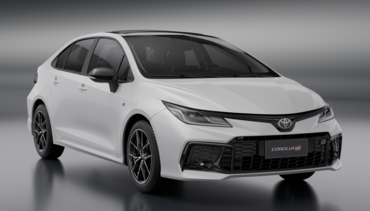
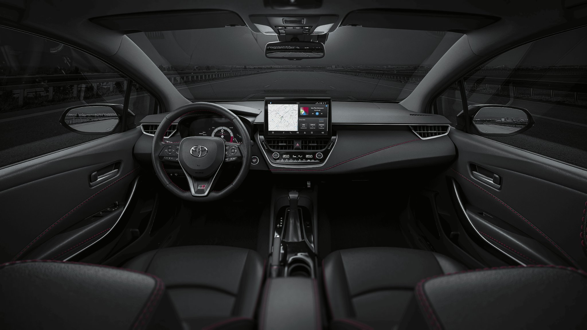
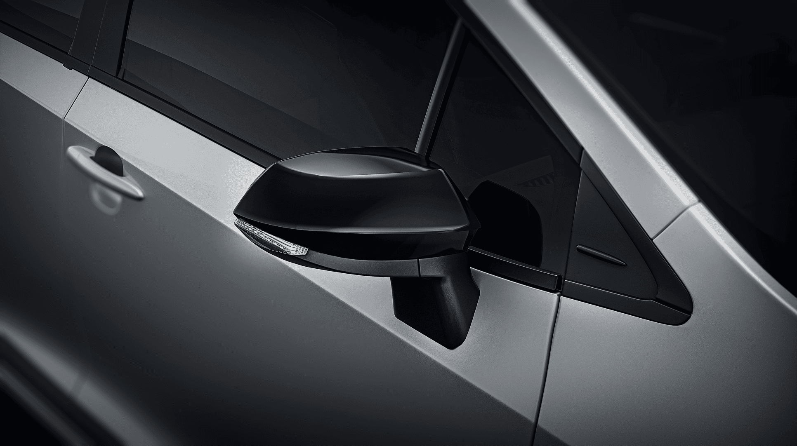
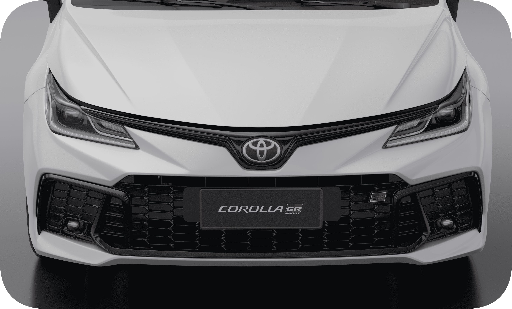
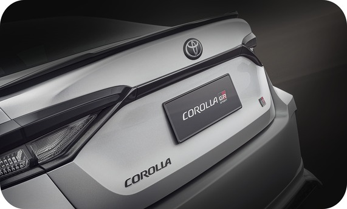
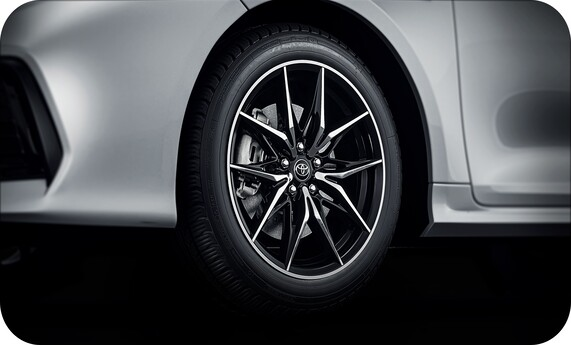

Si este es tu modelo de vehiculo, contáctanos.

GR-SPORT 2.0 CVT
$55.439.000
Razones para tener un Corolla GR-Sport

CENTRAL MULTIMEDIA 10"
Viví una experiencia de conducción conectada, con acceso fácil y directo para una visualización más clara de todas las funcionalidades del vehículo.

MOTOR 2.0L DYNAMIC FORCE
El Motor 2.0 L brinda un excelente equilibrio entre performance y bajo consumo con una potencia de 171 CV y 203 NM.

SUSPENSIÓN DEPORTIVA GR
Suspensión deportiva GR, con espirales y amortiguadores más firmes que le otorgan mayor control y maniobrabilidad a alta velocidad, junto con el refuerzo de chasis que mejora el comportamiento dinámico del vehículo.


NOVEDADES DEL COROLLA GR-SPORT

PARAGOLPE DELANTERO
Equipado con canalizadores de aire que permiten que el flujo de aire sea dirigido de manera más eficiente, fluyendo desde el centro del paragolpes hacia los laterales y debajo del mismo. Este diseño no solo mejora la estabilidad del vehículo a altas velocidades, sino que también tiene un impacto significativo en la maniobrabilidad general.

SPOILER Y DIFUSOR INFERIOR TRASERO
Ambos inspirados en la icónica performance GR, guían el flujo de aire de manera precisa minimizando la resistencia aerodinámica. Además, contribuyen a reducir las turbulencias, lo que se traduce en una conducción más segura y placentera en carretera.

DISEÑO LLANTAS
Llantas deportivas de 10 rayos de 17" con neumáticos 225/45 en color negro y diamantado. El vehículo cuenta con un paquete aerodinámico que optimiza la adherencia de las llantas al asfalto para una respuesta más rápida y mejorando el agarre del vehículo en curvas.